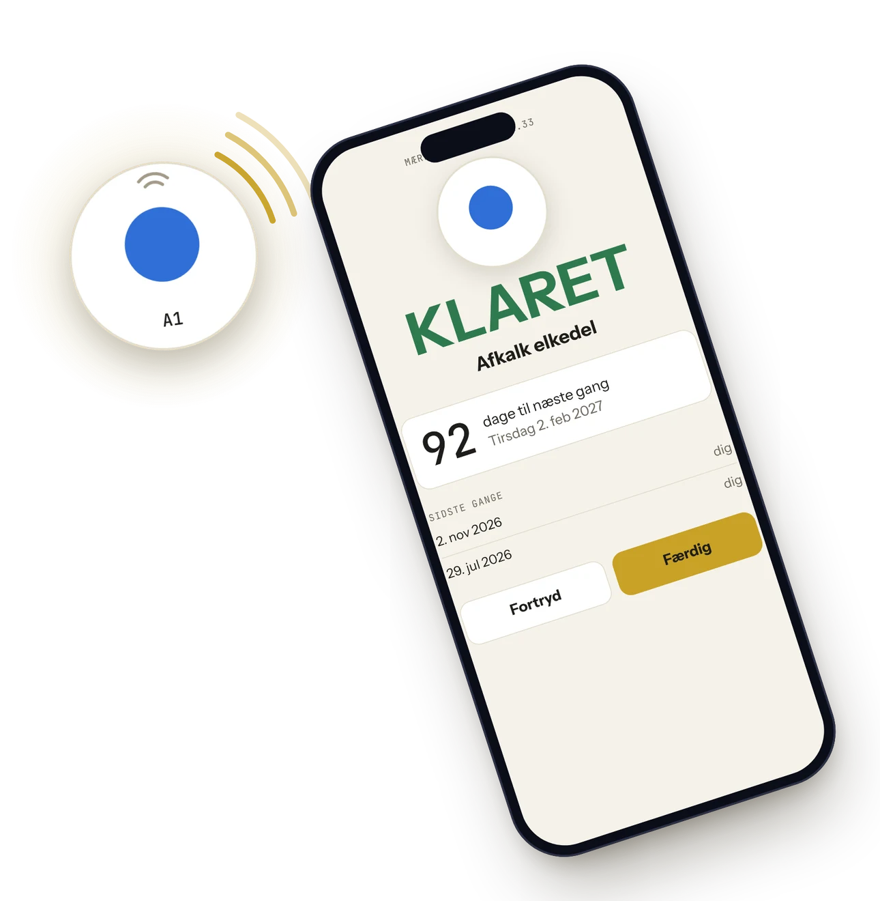
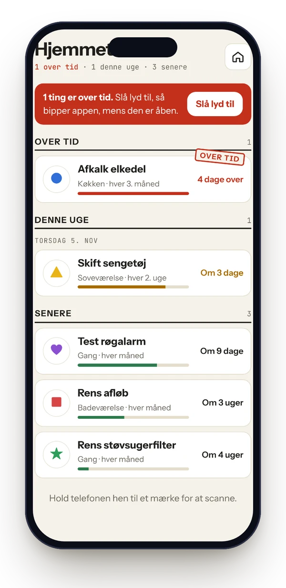
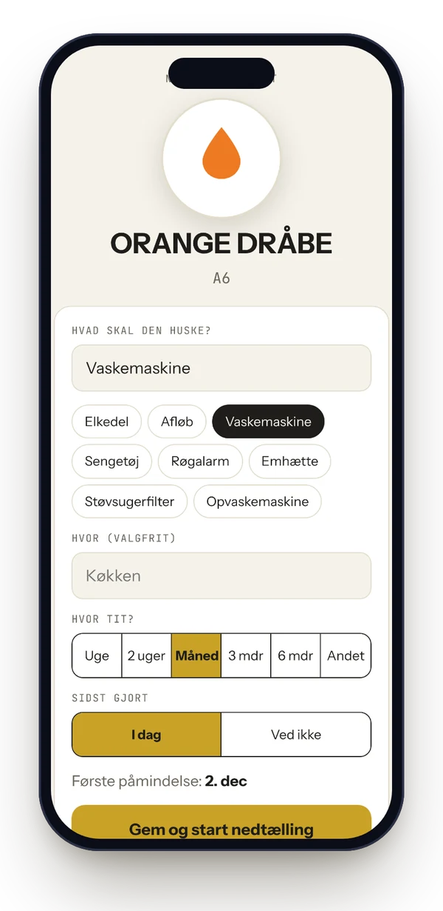
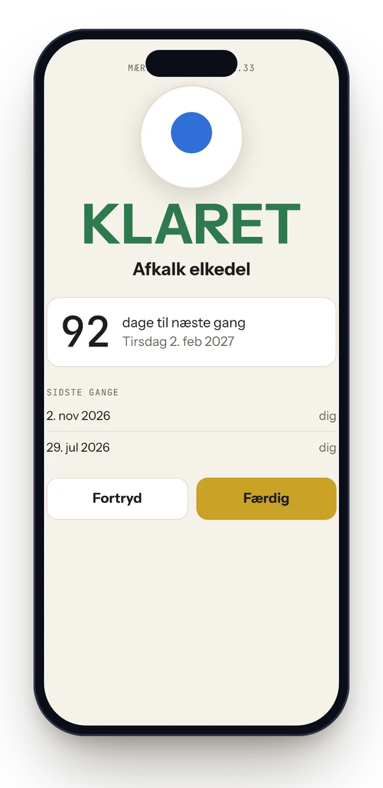

Plejer
PlejerPakke 1
- 8 ×hvide mærker, A1 til A8
- Cirkel, firkant, trekant, stjerne, hjerte, dråbe, måne og lyn
199kr.Bestil
Sæt et mærke på elkedlen, afløbet og støvsugeren. Scan det, når det er gjort. Plejer tæller ned til næste gang og bliver ved med at minde hele husstanden om det, indtil nogen har gjort det.

Mærkerne er færdige fra pakken. Du skal ikke programmere noget.
Klistr den blå cirkel på elkedlen eller den røde firkant ved afløbet. Ét mærke for hver ting, der skal gøres igen.
Scan mærket første gang. Skriv hvad det er, og vælg hvor tit. Hver uge, hver måned eller hver tredje måned.
Hold telefonen hen til mærket. Nedtællingen starter forfra, og påmindelsen forsvinder for hele husstanden.
Hvert mærke har sin egen form og farve. Så kan alle sige det højt: har du scannet den røde firkant?
Sengen, støvsugeren, røgalarmen, vaskemaskinens låge. Ikke direkte på metal.
Opvaskemaskinen skal have renset filter, salt og afspændingsmiddel. Det kan ligge på samme mærke. Når du scanner, vælger du, hvad du har gjort.
Alle mærker er klar til brug, når de kommer ud af posen.
Scanner du elkedlen, kan resten af husstanden se det med det samme. Og deres telefoner holder op med at mase.



Nej. Hold telefonen hen til mærket, så registrerer den det. På iPhone kommer der en lille boks øverst på skærmen, som du trykker på.
Ja. De fleste telefoner fra de seneste år kan læse NFC-mærker. På iPhone virker det fra iPhone XS og frem.
Så bliver Plejer ved. Påmindelsen kommer igen, indtil nogen i husstanden har scannet mærket. Det er hele idéen.
Du inviterer dem med en kode fra appen. Derefter ser alle den samme liste og får de samme påmindelser.
Appen er gratis. Du betaler kun for mærkerne, én gang.
Ikke direkte. NFC-mærker virker ikke oven på metal. Sæt mærket på håndtaget, låget eller væggen lige ved siden af.
Tag pakke 2 eller den samlede pakke. Pakke 2 er sorte mærker med otte andre former, så alle 16 kan kendes fra hinanden. Køber du to af samme pakke, kan appen godt skelne dem, men I skal selv holde styr på, hvilken blå cirkel der er hvilken.
Ja. Slå det til under husstandens indstillinger i appen. Så kan opvaskemaskinens mærke fx huske både filter, salt og afspændingsmiddel. Når du scanner, vælger du, hvad du har gjort.
Plejer har en søster, der hedder StemplerInd. Ét mærke ved døren stempler dig ind om morgenen og ud igen, når du går. Appen lægger timerne sammen, holder øje med din norm og laver din timeseddel.